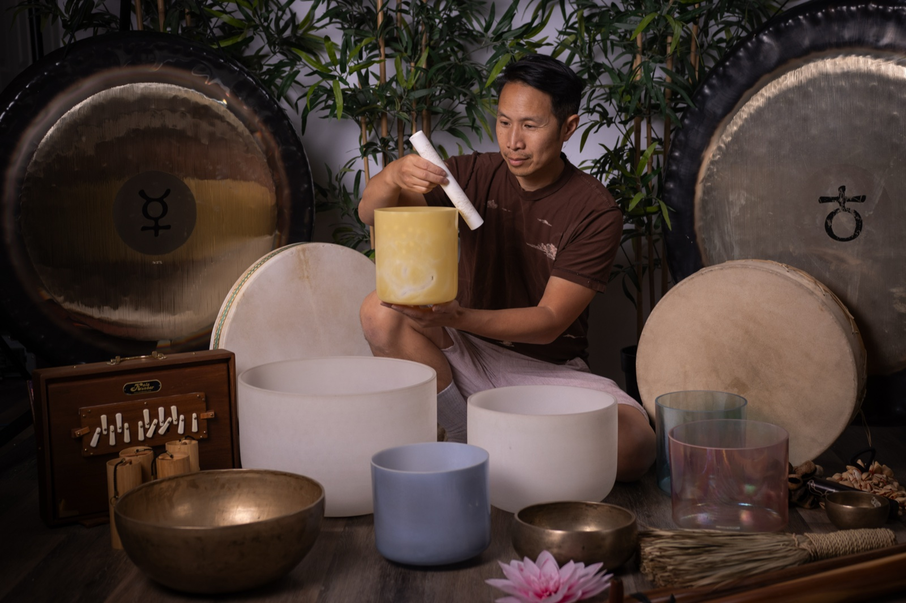

5 Reasons to Book a Corporate Sound Bath for your Edmonton Team

Can we play with saying the quiet part out loud:
Most corporate wellness programs are often forgettable. A lunch-and-learn about hydration. A step-count competition. An escape room. A one-time yoga class that half the team skips because they're "too stressed" to take an hour off.
How are sound baths any different? Well, I've facilitated them for teams across Edmonton — from small non-profits to mid-size companies — and the feedback is almost always the same: "That was nothing like I expected, and I needed it way more than I knew."
Here's some reasons why HR managers and team leads are adding sound baths to their wellness calendars.
1. A Powerful Reset (Not a Quick Fix)
Let's be honest — one session isn't going to solve chronic stress. And we'd never claim it does. The root of burnout runs deeper than any single experience can reach.
But what a sound bath does is give your team something most of them haven't felt in a long time: genuine rest. Real, full-body stillness. The kind that reminds your nervous system what "regulated" actually feels like.
Sound baths work directly on the autonomic nervous system. Sustained exposure to specific frequencies and tonal qualities activates the parasympathetic response — the physiological counterweight to chronic stress. A 2016 peer-reviewed study published in the Journal of Evidence-Based Integrative Medicine found significant reductions in tension, anxiety, and physical pain after a single sound meditation session.
One session won't cure burnout. But it can deliver a powerful message and an experience your team will genuinely remember. And for many people, it's the first time they realize just how wound up they've been.
For a deeper wellness experience, sound baths can also be paired with breathwork, guided meditation, or yoga — turning a single session into something more transformative. Ask us about what you are looking for.
2. No Experience Required — Everyone Gets It Equally
One of the persistent problems with corporate wellness offerings is that they create a two-tier experience. People who already do yoga feel fine. People who've never done yoga feel awkward and leave early. The benefit goes to the people who need it least.
Sound baths offer a way to level the playing field. You don't need flexibility, mindfulness experience, or any particular belief system. You lie down. You close your eyes. You let the sound work.
The skeptics are at least curious, and often have the most profound responses. I've watched lifelong "I can't relax" people fall into genuine stillness for the first time in years.
Everyone on your team starts from zero. Everyone finishes having experienced something real.
3. It's Actually Memorable
Sound baths are genuinely unusual. The experience of lying in a room while crystal bowls and gongs fill the space — feeling the vibration in your chest, your hands, behind your eyes — is not something people forget. People have unique psychosomatic phenomena occur: tingling, warmth, emotional release, vivid imagery. It's different for everyone, and it's different every time.
It becomes a shared reference point. "Remember that sound bath?" becomes something your team actually says.
Shared unusual experiences build real connection between colleagues. Something that touches people in a place that work usually can't reach.
There's something about shared rest — time spent in renewal together — that bonds people in a quieter, more honest way than any team-building exercise. I smile thinking about the positive chatter and shared sense of camaraderie that often surfaces after a team session.
There's also an aesthetic of beauty to it. The instruments themselves are stunning. The sounds are unlike anything most people hear in daily life. Beauty disarms people in a way that PowerPoint slides about stress management never will. The entire presentation is an aesthetic, and a creative act of beauty for all the senses.
4. It's Easy to Deliver
I bring all the instruments. I handle the setup and facilitation. Your team shows up to whatever space you have — a boardroom, an open-plan area, an outdoor space in the summer. I can work with groups from 8 to 80.
No special equipment needed from your side, though comfortable mats are helpful. Nobody needs to change clothes. Sessions run from a focused 45 minutes to a full 75 minutes of actual sound time, depending on what fits your event.
For Edmonton companies running wellness days, team retreats, or end-of-year appreciation events, this is genuinely low-friction to execute and high-impact for the people who experience it.
5. It Sends a Real Message About Your Culture
What you invest in tells your team what you think they're worth. A $15 gift card says something. Bringing in a sound therapist for a genuine, restorative experience says something else entirely.
I've had team members tell me afterward how grateful they were that they worked for a company that actually cares about their nervous system — not just their productivity.
In a hiring and retention landscape where people are choosing employers partly based on culture and genuine care, a corporate sound bath is a small investment with outsized signal value.

Bring a Sound Bath to Your Edmonton Team
I offer corporate sessions for organizations across Edmonton and the surrounding area. Whether you're planning a wellness day, a team retreat, or a one-off appreciation event, let's talk about what would work for your group. Check out our CTV News feature in 2026.
Inquire about Corporate Bookings
— Marcus
Earth Harmony Sound & Wellness | Edmonton, Alberta